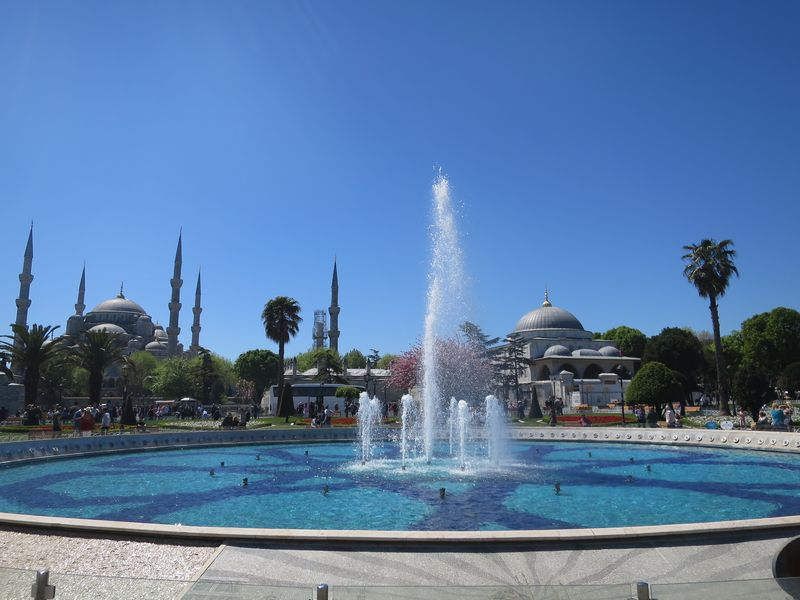
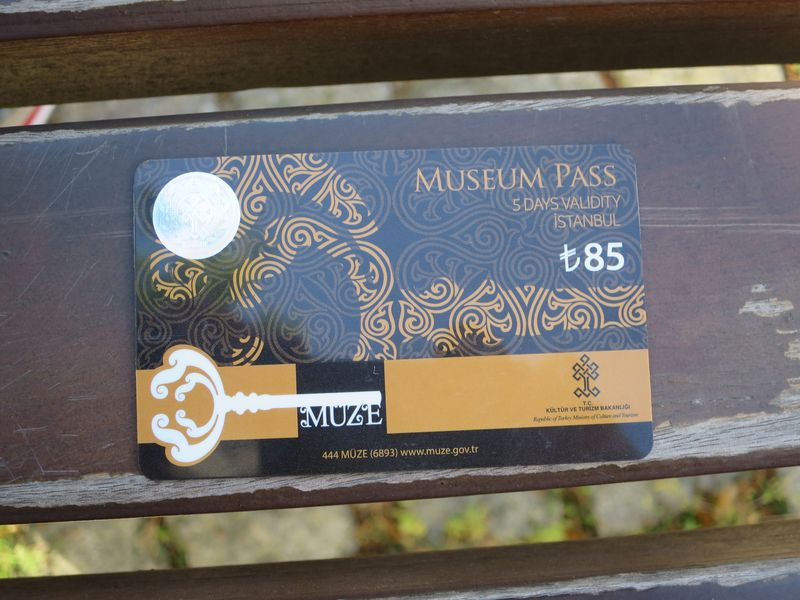

Istanbul

今次去土耳其旅行，搭 Turkish Airline 由香港直飛 Istanbul，終於唔使轉機，直航十個鐘夜機對我嚟講最好不過，一埋位就訓到降落前嗰餐，發覺張餐牌係 Batman v Superman，記得好型嘅 wonder woman 又搭又唔搭嘅就係土耳其航班。
落機至係朝早五點幾，入境後去大堂 ATM，又係香港一啲銀行提款卡取消咗世界通行嘅 PLUS、而強逼人用強國銀聯嘅問題！最低 B 嘅係連當地的 HSBC ATM 都提款唔到，幸好仲有一部 ING 嘅機用到。真係嬲嬲地遲啲搵返間有 PLUS 嘅轉晒啲錢過去。
預訂咗嘅 hostel 位於 Sultanahmet 區，4 TL (Turkish Lira) 由機場搭 Metro 去 Zeytinburnu 站再 4 TL 搭 Tram 去到 Sultanahmet 就得。之後至知有 Instanbul 卡，可以增值同每程平啲，不過是但，同埋按金都成 7 TL 好似冇得退，費事煩。
Hostel 叫 Mansion by Cheers，揀佢係因為佢有單人房，仲要係收單人價，其他嘅都要逼你一人畀二人房嘅價。位置係有啲啲難搵，但其實好方便。去到太早，冇人，响裏面大廰坐，等到八點幾，終於有人嚟，好似係準備早餐嘅員工。佢哋好熱情，又請飲茶又問你食唔食嘢。
放低大背囊，出去睇 Blue Mosque 同 Aya Sofya，Blue Mosque 好似冇乜印象… 係好大座，不過之後睇嘅都差唔多大。Aya Sofya 就正，以前係教堂，之後變咗清真寺，而家就一座博物館。入場費好似都成 40 TL，我買咗 Instanbul Musuem Pass，可以五日內任去好多博物館，包括我呢兩日一定去嘅 Aya Sofya、皇宮同一啲博物館，而張 pass 只售 85 TL、之後發覺仲有一張係全國博物館嘅 pass，105 TL，限時十幾天，仲抵，淨係 Aya Sofya Topkapı 連 後宮 同 考古博物館 都超過呢個價，之後去 Cappdocia 嘅一啲 open-air museum 又可以用。
响 Aya Sofya 售票處買 museum pass，要 passport 登記。入場前有個人問我要唔要導遊，100 TL 連入場費。不過得我一個人冇人 share 太貴。其實冇導遊係差好遠，一個普通人又點能夠一時三刻識得遊覽呢座建築物，建築風格同歷史等，都係靠書上嗰幾十行文字嘅簡單描寫。場內有露天餐廳，入去買杯土耳其啡，成 8 TL，係此行最貴嘅一杯，不過第一次買唔知價，一杯細細嘅啡，有一半係咖啡渣，可以飲嘅好少，另外又有一杯水，唔知要嚟做乜，之後至知。
Aya Sofya 已經係最多人去嘅地方，但今日唔算多人，我當時其實冇為意遊客少呢個現象。睇完之後行去 EMINONU 區搵食，食店選擇比 Sultanahmet 多同平，有 2TL 就買到嘅新鮮橙汁，EMINONU 海邊 Galata 橋底一帶有 Balık-ekmek (魚柳包) 食，8 TL 一件。
陽光好猛好熱，下晝去逛考古博物館避避，不過行完幾個場館都仲係日光白白，响室外一啲椅坐，發現原來呢度啲貓好多，走來走去。休息到夠，但好似冇乜嘢做咁，又諗住聽日至去皇宮，就咁坐咗响度，我覺得，真係好無聊，都唔知為乜。
然後，行返去 Blue Mosque 外面嘅廣場，突然有個人問我時間，佢叫 K，然後佢同我傾偈，話未去過 Taksim 想去，不如一齊去之類。然後，我哋就行過去，唔識路，行咗唔知去邊，由天光行到天黑。去到 Taksim 附近食飯，我見 Taksim 區啲遊客區餐廳好似好貴，唔想去，但佢話佢請，我唔好意思，只係叫少少嘢食，但佢真係請我。然後，K 話要飲啤酒，我本來唔想，但都係跟咗佢去飲，然後我埋單，超貴。
我都唔係第一次咁白痴，仲要，其實响 wiki travel 明明睇過呢啲 warning，但係，又係唔知乜事一去到新地方，就又傻又天真。返去 hostel 途中，又遇到一個自稱來自 Cyprus 嘅人，初頭要我幫佢影相，傾傾下又係想一齊去飲酒，今次當然唔再理佢。
返到去 hostel 老闆好例牌咁問我今日點，我話咗畀佢知我嘅蠢事，之後返到去房，都聽到樓下啲人講，不過我唔介意，因為我嘅心情，好複雜奇怪。
嚟之前好一段時間，我早已經冇乜動力，一切都唔再有乜嘢意義。
K 用咗好多時間同心機，我唔知道有乜係真有乜係假，但唔重要，事實係，我係因為佢講嘅嘢，呢幾個鐘，見到嘅風景，我至會有所改變，至可以再次睇得見呢個世界，見得到一啲美好嘅嘢。而呢個轉變，好諷刺地係因為一個騙子。同時間，以及之後，我仲不時回想嚟勉勵同提醒自己，其實仲有啲感激，係咪好變態？


Blue Mosque

 Turkish Coffee
Turkish Coffee
 Aya Sofya
Aya Sofya
Turkish Tea
Mansion by Cheers





